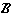

Y.
Y.
| Previous page (The subspace topology) | Contents | Next page (The identification topology) |
Given topological spaces X and Y we want to get an appropriate topology on the Cartesian product X Y.
Obvious method
Call a subset of X Y open if it is of the form A B with A open in X and B open in Y.
Difficulty
Taking X = Y = R would give the "open rectangles" in R2 as the open sets. These subsets are open, but unfortunately there are lots of other sets which are open too.
We are therefore forced to work a bit differently.
Definition
A set of subsets  is a basis of a topology  if every open set in is a union of sets of .
if every open set in is a union of sets of .
Example
In any metric space the set of all  -neighbourhoods (for all different values of ) is a basis for the topology.
-neighbourhoods (for all different values of ) is a basis for the topology.
Remark
This is a very helpful concept. For example, to check that a function is continuous you need only verify that f-1(B) is open for all sets B in a basis -- usually much smaller than the whole collection of open sets.
We can now define the topology on the product.
Definition
If X and Y are topological spaces, the product topology on X Y is the topology whose basis is {A B | A  X , B Y}.
X , B Y}.
Examples
Proof
The sets of the basis are open rectangles, and an -neighbouhood U in the metric d2 is a disc. It is easy to see that every point of U can be contained in a small open rectangle lying inside the disc. Hence U is a union of (infinitely many!) of these rectangles and hence is in the product topology.
Since every open set in the d2 metric is a union of -neighbourhoods, every open set can be written as a union of the open rectangles.

 A torus is the surface in R3: S1 where S1 is a circle (the curve, not the interior) in R2. In this way it can be thought of as a subset of R4. S1.
A torus is the surface in R3: S1 where S1 is a circle (the curve, not the interior) in R2. In this way it can be thought of as a subset of R4. S1.
Proof
A basis for the subspace topology on S1 is the set of "arcs"
Hence a basis for the product topology on S1 S1 is sets of the form:
A basis for the subspace topology on the torus as a subset of R3 is the intersection of the torus with -neighbourhoods of R3 (which are "small balls") and hence are sets of the form:
As before, one can get these "ovals" as unions of the small "bent rectangles".
= { , {a, b}, {a} } on X = {a, b}. X is {, X X, {(a, a)}, {(a, a), (a, b)}, {(a, a), (b, a)}, {(a, a), (a, b), (b, a)} } where the last open set in the list is not in the basis.
, {a, b}, {a} } on X = {a, b}. X is {, X X, {(a, a)}, {(a, a), (a, b)}, {(a, a), (b, a)}, {(a, a), (a, b), (b, a)} } where the last open set in the list is not in the basis.
Remark
Given any product of sets X Y, there are projection maps pX and pY from X Y to X and to Y given by (x, y)  x and (x, y) y.
x and (x, y) y.
The product topology on X Y is the weakest topology (fewest open sets) for which both these maps are continuous.
| Previous page (The subspace topology) | Contents | Next page (The identification topology) |